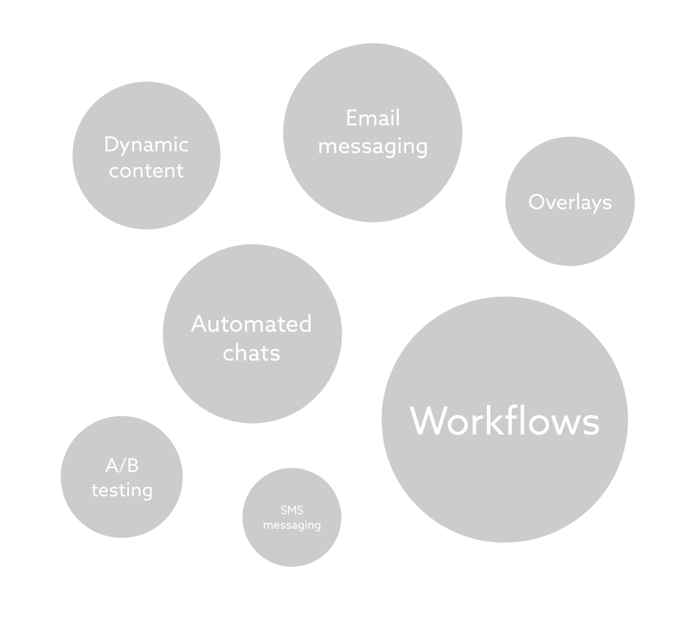

Framing in Product Design
When I joined SMARKIO in 2015 as the company’s first designer, I took on many responsibilities ranging from branding, web design, and UX design.
No thread
The SMARKIO dashboard — a marketing automation suite — was comprised of several tools originally developed for internal use at Adclick. All these tools were bespoke and developed years prior at the request of the marketing teams, without much regard for:
- User experience — these tools were worked on exclusively by developers. While some of them did an admirable job taking the user’s experience into account, this was simply not a requirement. Why spend time making your tools user-friendly when your users are just across the office and can walk up to you to ask for help?
- Cohesiveness — these tools existed in isolation and without a sense of a “bigger picture.” Some of the users found creative ways to use them in conjunction, but this was never by design.
As a Product Designer, fixing these two issues was my biggest goal.
Here's a list of some of the features included in the product:
Meeting the users halfway
In order to find a thread that would tie everything together, we started by categorising features, breaking them down into:
- Onsite — tools for engaging visitors on a website
- Offsite — tools to engage leads through direct messaging
Once this was accomplished, we looked into how the people from Adclick — the customers most comfortable and familiar with the product — were using it. After studying the ways they were mixing and matching these features, we recognised that our tools were being used for two distinct purposes — some could be used to managed the content that was being served, and others the channel through which this content was being distributed.
Here's a few examples:
As a result, we further broke down the features into two different purposes:
- Content — the content that is delivered
- Channel — the means through which content is delivered
In the end, the features were distributed in the following map:
With this mental map of how the features could come together, we were ready to establish this relationship through the UI in order to help encourage the mixing and matching of features and create a more cohesive product overall.
To communicate this map, we used simple metaphors, making sure to test them with existing users and prospects:
- Onsite — a picture (the content) on a frame (the channel) on a wall (the website/pages)
- Offsite — a message (the message) in a bottle (the channel)

Conclusion
These changes were introduced in a very gradual manner not only due to limited development resources but also to avoid implementing drastic changes that would potentially confuse existing users. Nevertheless, the seemingly mere act of grouping and ordering features in the menu proved a big success.
This contributed to a better understanding of SMARKIO as a whole and encouraged users to combine tools rather than use them in isolation - an employment that widened the purposes of the platform.
Find a sample of the work I developed at SMARKIO here.